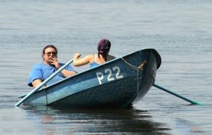

Amargado
 De: La Frikipedia, la enciclopedia extremadamente seria.
De: La Frikipedia, la enciclopedia extremadamente seria.
| De la serie animales y otros bichejos:
|
|
|
| A que no adivinas por qué está amargado
|
|
| Nombre común:
|
Amarguetas
|
| Nombre científico:
|
Culus Fruncidus
|
| Especie:
|
Malhumorada
|
| Subespecie:
|
Resentida
|
| Alimentación:
|
Cáscaras de toronja, café sin hacer (sin hagua ni ná), insultos a granel
|
| Apariencia:
|
Son capaces de joderle el día a Ned Flanders
|
| Hábitat natural:
|
Pórticos de casas portando escopetas por si los niños patean un balón a su jardín
|
| Localización:
|
Frente a ti en la cola del super, quejándose con la cajera
|
| Número aproximado de ejemplares:
|
Se incrementa conforme más feliz estés
|
| Fecha de extinción:
|
Eso quisieran, pero junto con todo el puto mundo
|
| Pokemonización:
|
Rattatta con rabia
|
El amargado (más familiarmente conocido como amargarina) es aquella persona mohína, rancia, amarga, frígida, sin gracia, cansada de su puta vida y con ganas de transmitir estos sentimientos a todo aquel que le rodee, cuanto más cercano mejor.
Es común en gente con problemas psicológicos, en pringaos ligones, en IP anónima y demás capullos.
Historia
Se remonta a la Biblia, cuando Adán y Eva fueron expulsados del paraíso. Entonces se enfadaron y dejaron de follar hablar, se irritaron y se amargaron el resto de su vida.
Desde entonces siempre ha habido problemas con la pareja por la falta de sexo. Fue la causa del final del canifato y es lo que provocó la creación del Pantallazo Azul de la Muerte
Este tipo de persona se caracteriza por
 Mujer amargada con su marido (no follan)
- No salir de casa o evitarlo a toda costa, a menos que sea para sacar al perro o ir al cine a ver películas pastelosas con finales en boda.
- Ponerse hecha una furia ante cualquier situación por estúpida que sea.
- Hacer todo lo posible para amargar las mejores situaciones.
- Ir siempre acompañada de un calzonazos que le de la razón en todo.
- Hacer su vida completamente monótona.
- Ridiculizar a sus
amigos conocidos.
- Gastarse el dinero en objetos innecesarios para intentar mejorar su triste existencia.
- Menstruar 30 días al mes, y si el mes tiene 31 días, el día restante le dolerá la cabeza.
- Pegar a su boxeo.
- j$$$# a los demás.
Kit de supervivencia de toda amargada que se precie
- La receta de unos espaguetis carbonara, que repetirá mil veces cuando tenga visita.
- Ambientador de melocotón para poder sustituir la limpieza diaria de la casa o mascotas.
- Puño americano para hacerse escuchar.
- Colección completa de los Sims para tener una buena excusa para no salir de casa.
Típicas frases de una amargarina en toda regla
- ¡¡Sí hombre, los cojones del carpintero!!
- Yo ahí no voy.
- Yo paso, me quedo en mi casa.
- Yo no hago de comer para gente rara.
- El que no tenga pensado pagar el cubierto, que no venga.
- Aquí hay mucha lumbre.
- ¡¡Tú verás!! (respuesta sutil empleada como respuesta negativa, obviamente, ante cualquier pregunta de su pareja).
- Hoy te quedas sin f$*@@r.
- ¡Que no! ¡Que yo me voy ya de aquí! ¡Que le den por culo!
- ¡Sí! Los cojones voy a dejar yo propina...
- (A un buitre de discoteca) Que venga a meterme cuello, para mandarlo a la m#*$@a...
¿Quieres poner una amargada en tu vida?... ¡TU VERÁS!
Autor(es):
- Doctor grijander
- Mahara
- Grifada
- Kaori
- Viento
- Khazike Khashondo
- Azulejos
- Huevos
- Frikih
- Daikataro
Frikipedia 2005-2016, Licencia
GFDL 1.2 - Extraído por FrikiLeaks